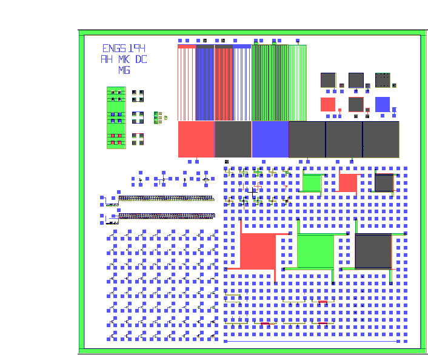
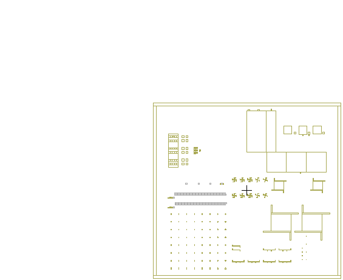
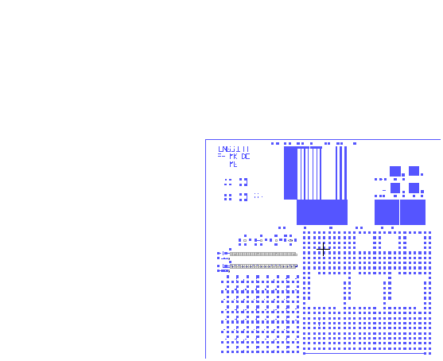
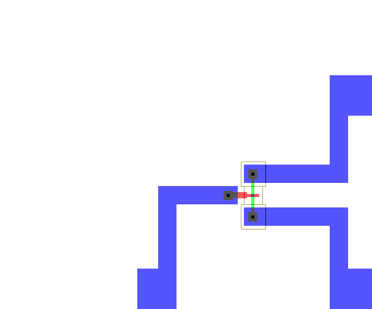

MASKS
1. All FOUR masks - Notice MOSFETS, Ring Oscillators, Capacitors, Alignment Marks

2. Photomask #1 - Gate Moat/Wells

3. Photomask #2 - Poly Mask: Gate Definition

4. Photomask #3 - Contact Definition

5. Photomask # 4 - Metal Line Definition

6. Closeup of single N-ch MOSFET Junction:
